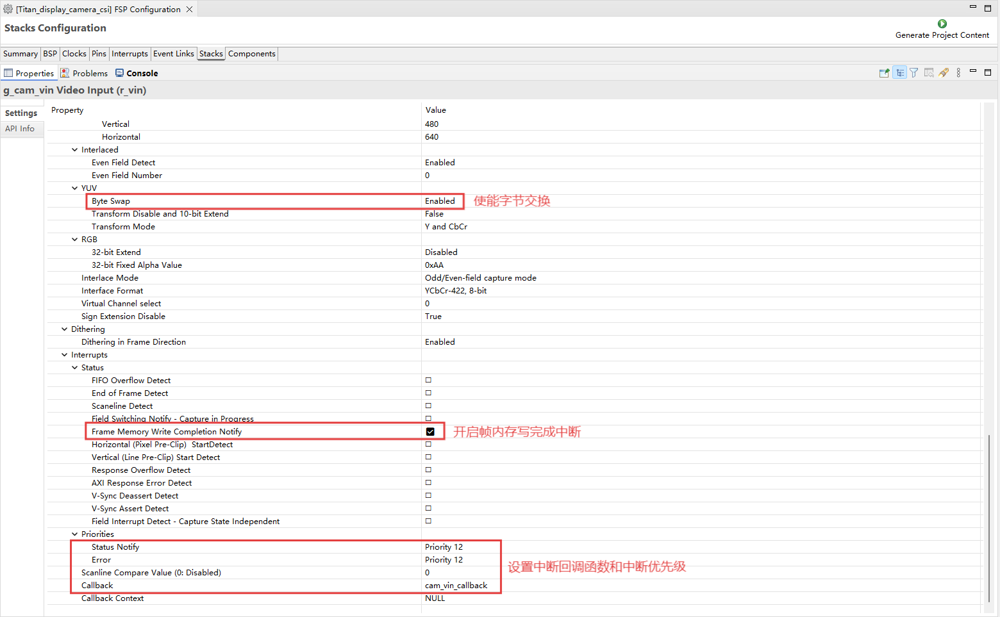
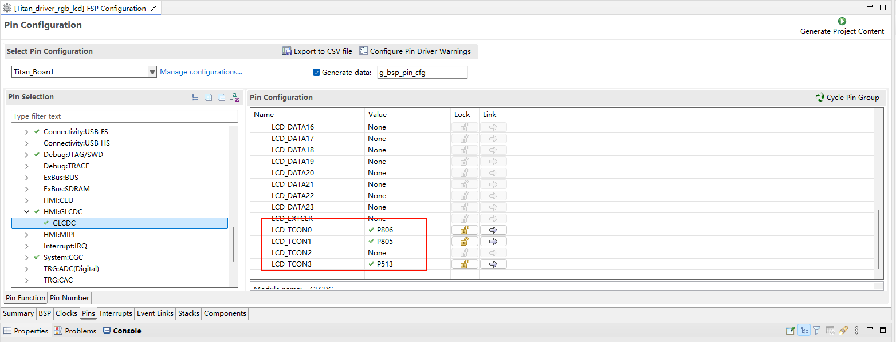

MIPI CSI 摄像头使用说明
中文|English
简介
本示例展示了如何在 Titan Board 上使用 MIPI CSI（Camera Serial Interface） 接口连接 OV5640 摄像头，并通过 RT-Thread LCD 框架将捕获的图像显示到 RGB565 LCD 屏幕。
主要功能包括：
初始化 MIPI CSI 摄像头接口，捕获实时视频流
配置 OV5640 摄像头参数（分辨率、帧率、输出格式）
使用 RT-Thread LCD 驱动显示摄像头捕获的图像
支持图像格式转换（YUV422 → RGB565）
RA8 系列 MIPI CSI 特性
RA8 系列 MCU 集成 MIPI CSI 硬件模块，用于高速、低功耗摄像头数据采集，适合高清视频和实时图像处理。
1. 硬件接口特性
接口类型
MIPI CSI-2 D-PHY 接口，支持高带宽串行传输
支持 1–4 数据通道 (Lanes)
同步信号由 MIPI D-PHY 控制，无需额外 HSYNC/VSYNC
数据速率与分辨率
支持每通道最高 1.5–2.5 Gbps（取决 MCU 系列和 PHY 配置）
可驱动常见摄像头分辨率：VGA、QVGA、SXGA、UXGA、1080p 等
摄像头兼容性
兼容 OV5640、IMX219 等常见 CMOS 摄像头
支持摄像头寄存器配置和自动初始化
2. 图像格式与处理能力
图像格式支持
RAW10 / RAW12（用于算法开发和图像处理）
YUV422（用于视频显示）
RGB565（适合 LCD 显示）
图像处理功能
颜色空间转换（YUV → RGB）
图像裁剪（ROI capture）
镜像与翻转
硬件缩放加速
硬件加速
MIPI CSI 内置 DMA，可减轻 CPU 负担
高速格式转换与缩放
3. DMA 支持与缓冲机制
高速 DMA 传输
与 MCU DMAC 协作，将图像直接写入内存或 LCD 缓冲区
减少 CPU 干预，提高帧率
多缓冲区机制
支持双缓冲或环形缓冲，实现连续视频采集
避免帧丢失和显示延迟
DMA 配置灵活
可配置缓冲区起始地址和大小
支持中断回调处理
4. 中断机制
中断类型
帧完成中断：每帧采集完成时触发
行完成中断（可选）
错误中断：缓冲区溢出、PHY 错误等
中断特点
支持 RT-Thread ISR 回调
可与 DMA 联动，实现实时显示
5. 时序与同步特性
同步方式
CSI 使用 MIPI D-PHY 提供时钟和数据同步
无需额外 HSYNC/VSYNC
像素时钟与数据对齐
支持按像素对齐或按字节对齐
自动处理 RAW/YUV/RGB 数据对齐
6. 性能优化
高吞吐量
DMA + 双缓冲实现无间断视频采集
CPU 占用低，适合实时应用
可靠性
PHY 错误、数据丢失中断可触发异常处理
支持缓冲区溢出检测
灵活性
多分辨率、多格式支持
支持 ROI 捕获和硬件缩放，提高显示效率
7. 应用场景
实时视频显示到 LCD
视频采集与处理算法验证
嵌入式视觉应用，如监控、手势识别、机器人视觉
RA8 系列 MCU GLCDC（Graphics LCD Controller）特性
RA8 系列 MCU（如 RA8P1）集成 GLCDC 硬件模块，用于驱动 TFT/LCD 显示屏，实现高速图形渲染和视频显示，支持多种分辨率、色彩格式和显示模式。
1. 硬件特性
分辨率支持
可驱动从 QVGA (320×240) 到 WQVGA/XGA 等常用分辨率
受片上 RAM 和显示接口带宽限制
色彩支持
支持 1/4/8/16/24/32 位色深
常用 RGB565、RGB888 格式
支持调色板模式（Palette mode）
可硬件进行色彩转换
接口类型
并行 RGB（TFT LCD 接口）
支持 16/18/24 位数据总线
可与外部 LCD 面板直接连接
时序可编程：HSYNC、VSYNC、DE、PCLK、RGB 输出
2. 图层与显示模式
图层支持
单图层模式（单画面显示）
多图层模式（通过调色板或硬件 alpha 混合叠加）
支持透明/半透明叠加
显示模式
RGB 模式（直显颜色输出）
CLUT/Palette 模式（索引颜色，通过查表转换）
可配置扫描方向（水平/垂直扫描）
3. DMA 与帧缓冲
帧缓冲访问
GLCDC 可直接访问片上/外部 SRAM 中的帧缓冲
支持单缓冲、双缓冲模式
支持环形缓冲，用于连续刷新
DMA 支持
与 MCU DMAC 协同工作，减少 CPU 占用
可将图像直接从内存传输到 LCD
支持行、块或全帧传输
4. 硬件图形功能
窗口裁剪与缩放
可指定显示窗口区域
可支持简单缩放（水平/垂直）
硬件图形加速
支持矩形填充、颜色替换
支持图像透明处理
可结合 CEU 或 DMA 进行视频显示
颜色格式转换
YCbCr → RGB
RGB888 → RGB565
硬件加速，减少 CPU 负担
5. 中断机制
中断类型
帧完成中断（Frame End）
行中断（Line End，可选）
访问错误/溢出中断
中断应用
与 RT-Thread ISR 集成
可在帧完成时触发更新缓冲区或切换双缓冲
方便实现动画和视频显示
6. 性能优化
双缓冲机制
支持双缓冲减少闪烁
CPU 可在后台绘制下一帧
GLCDC 硬件自动切换显示缓冲
帧率控制
可编程时钟和行/帧同步
支持 30fps、60fps 等常见刷新率
CPU 卸载
大量图形操作由硬件完成
DMA + GLCDC 结合，实现高效图像显示
硬件说明
MIPI DSI/CSI接口和 RGB LCD 接口如下图所示：
FSP 配置
HyperRAM 配置
新建 r_ospi_b stack：

配置 r_ospi_b stack：

HyperRAM 引脚配置：

HyperRAM 所有相关引脚的驱动能力配置为 H，OM_1_SIO0~OM_1_SIO7 需要配置为输入上拉。

I2C0 配置
新建
r_iic_masterstack：
配置 I2C0：
配置 I2C0 引脚：
VIN 配置
新建
r_vinstack：
配置 VIN：


MIPI CSI 配置
配置 MIPI CSI：
配置 MIPI 引脚：
MIPI PHY 配置
设置 MIPI PHY 模块名称：
D/AVE 2D 配置
新建
r_drwstack：

RGB LCD 配置
新建
r_glcdcstack：

配置中断回调和图形层1：

配置输出参数、CLUT、TCON和抖动。
配置 GLCDC 的引脚：


LCD 背光配置
新建
r_gptstack：
配置背光 PWM 输出：

RT-Thread Settings 配置
使能 MIPI CSI 摄像头，使用 i2c0；使能 RGB565 LCD，使用 pwm7 输出背光。
编译&下载
RT-Thread Studio：在RT-Thread Studio 的包管理器中下载 Titan Board 资源包，然后创建新工程，执行编译。
编译完成后，将开发板的 USB-DBG 接口与PC 机连接，然后将固件下载至开发板。
运行效果
复位 Titan Board 后终端会输出如下信息：
下面是 LCD 屏幕上显示的图像：